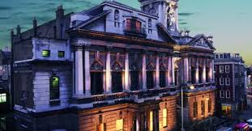

I chose Shoreditch Town Hall, because these artist have some political and social reforms to propose. Located in the vibrant neighborhood of Shoreditch, London, this area is know for its eclectic and progressive art scene. the space will be devided by a catwalk, laid out in an X shape, in the middle of the room. From the middle of the room the artist will push boundries, and break glass walls with their words. Lighting will be evocative; nothing but a single spot light on the performer. Smoke will cover float low through the audience as to take them to another place, with the provocative words.
